Data Structures and Algorithms
with Object-Oriented Design Patterns in Java
Data Structures and Algorithms
with Object-Oriented Design Patterns in JavaIn this section we examine some of the mathematical properties of big oh. In particular, suppose we know that 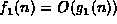 and 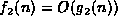.
 and ). and ).).
and ). and ).).
The first theorem addresses the asymptotic behavior of the sum of two functions whose asymptotic behaviors are known:
Theorem If and , then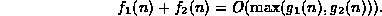
extbfProof
By Definition , there exist two integers,  and
and  and two constants 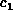 and 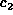 such that
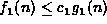 for 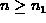 and
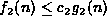 for 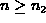.
and two constants 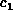 and 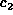 such that
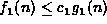 for 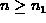 and
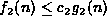 for 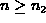.
Let 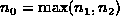 and 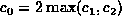.
Consider the sum 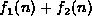 for  :
:
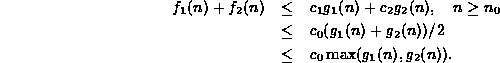
Thus, 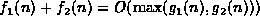.
According to Theorem ,
if we know that functions and are
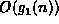 and 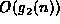, respectively,
the sum is 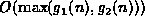.
The meaning of 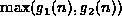 is this context is
the function h(n) where 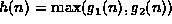
for integers all  .
.
For example, consider the functions 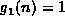 and 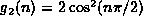. Then
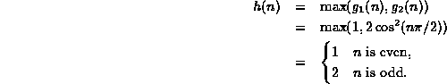
Theorem helps us simplify the asymptotic analysis
of the sum of functions by allowing us to drop the  required by Theorem in certain circumstances:
required by Theorem in certain circumstances:
Theorem If 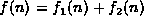 in which and are both non-negative for all integerssuch that 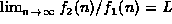 for some limit 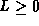, then 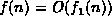.
extbfProof According to the definition of limits , the notation
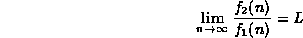
means that, given any arbitrary positive value 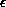,
it is possible to find a value  such that for all
such that for all 
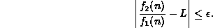
Thus, if we chose a particular value, say 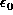,
then there exists a corresponding  such that
such that
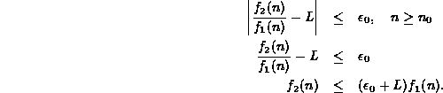
Consider the sum :
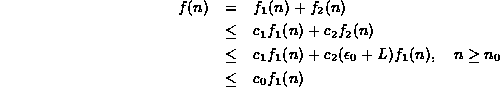
where 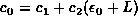. Thus, .
Consider a pair of functions and ,
which are known to be and , respectively.
According to Theorem ,
the sum is .
However, Theorem says that,
if 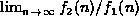 exists,
then the sum f(n) is simply 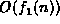 which,
by the transitive property (see Theorem below), is .
In other words, if the ratio 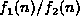 asymptotically approaches a constant as n gets large, we can say that is , which is often a lot simpler than .
Theorem is particularly useful result.
Consider 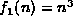 and  .
.
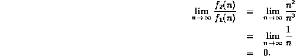
From this we can conclude that 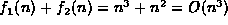.
Thus, Theorem suggests that
the sum of a series of powers of n is  ,
where m is the largest power of n in the summation.
We will confirm this result in Section below.
,
where m is the largest power of n in the summation.
We will confirm this result in Section below.
The next theorem addresses the asymptotic behavior of the product of two functions whose asymptotic behaviors are known:
Theorem If and , then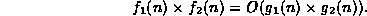
extbfProof
By Definition , there exist two integers,  and
and  and two constants and such that
for and
for .
Furthermore, by Definition ,
and are both non-negative for all integers
and two constants and such that
for and
for .
Furthermore, by Definition ,
and are both non-negative for all integers  .
.
Let and 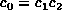.
Consider the product 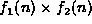 for  :
:
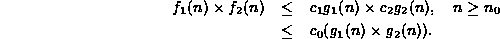
Thus, 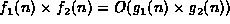.
Theorem describes a simple,
but extremely useful property of big oh.
Consider the functions 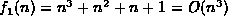 and
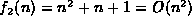.
By Theorem ,
the asymptotic behavior of the product
is .
That is, we are able to determine the asymptotic behavior of
the product without having to go through the gory details of
calculating that .
The next theorem is closely related to the preceding one in that it also shows how big oh behaves with respect to multiplication.
Theorem If and is a function whose value is non-negative for integers
extbfProof
By Definition , there exist integers  and constant such that
for
and constant such that
for  .
Since is never negative,
.
Since is never negative,
Thus, .
Theorem applies when we multiply a function, ,
whose asymptotic behavior is known to be ,
by another function .
The asymptotic behavior of the result is simply .
One way to interpret Theorem
is that it allows us to do the following mathematical manipulation:
That is, Fallacy notwithstanding,
we can multiply both sides of the ``equation'' by
and the ``equality'' still holds.
Furthermore, when we multiply by ,
we simply bring the inside the  .
.
The last theorem in this section introduces the transitive property of big oh:
Theorem (Transitive Property) If f(n)=O(g(n)) and g(n)=O(h(n)) then f(n)=O(h(n)).
extbfProof
By Definition , there exist two integers,  and
and  and two constants and such that
for and
for .
and two constants and such that
for and
for .
Let and . Then
Thus, f(n)=O(h(n)).
The transitive property of big oh
is useful in conjunction with Theorem .
Consider which is clearly  .
If we add to the function ,
then by Theorem ,
the sum is
because .
That is, .
The combination of the fact that
and the transitive property of big oh,
allows us to conclude that the sum is
.
If we add to the function ,
then by Theorem ,
the sum is
because .
That is, .
The combination of the fact that
and the transitive property of big oh,
allows us to conclude that the sum is  .
.
 Copyright © 1998 by Bruno R. Preiss, P.Eng. All rights reserved.
Copyright © 1998 by Bruno R. Preiss, P.Eng. All rights reserved.